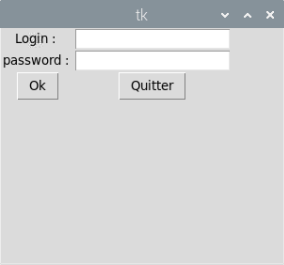
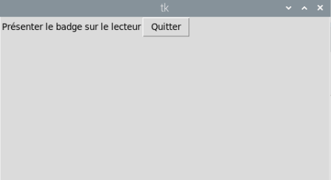
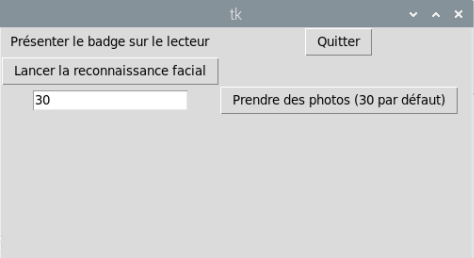
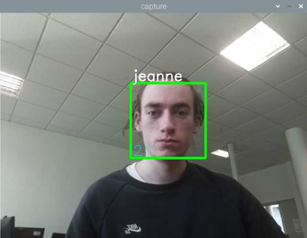
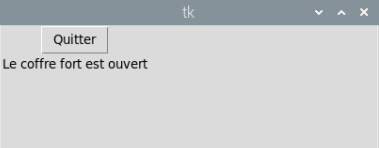
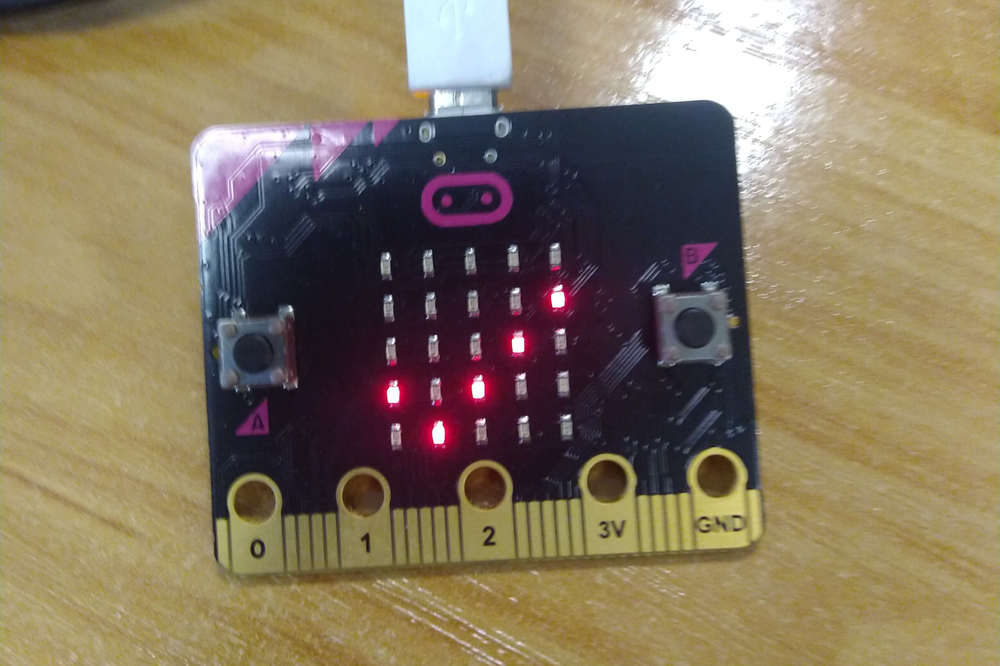
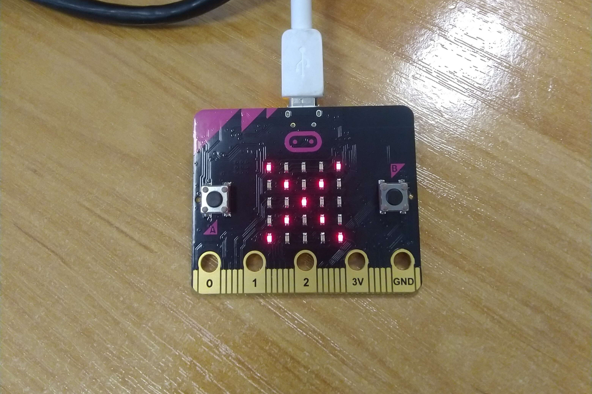

Au cours de ma formation en BTS SIO afin de mettre en pratique mes compétences en programmation , j'ai réalisé une application de connexion sécurisée en plusieurs étapes.
La société médicale Kaliémie est spécialisée dans la visite médicale de patients par des infirmières. La société souhaite posséder une solution d'authentification multiple afin de protéger un coffre-fort.
Réalisation d'un formulaire de login
Lecture de badge NFC (Near-Field Communication)
Détection & reconnaissance faciale
Historisation des connexions

Dans cette première partie, j'ai développé une interface de connexion utilisant l'API d'identification réalisée par notre professeur. Le formulaire a été mis en place avec la librairie python Tkinter.
Dans cette première phase l'utilisateur doit renseigner ses identifiants (fournis par le service informatique de la société médicale) pour s'authentifier.

Dans cette deuxième partie, l'authentification se fait à l'aide d'un badge NFC (Near-Field Communication), pour celà j'ai utilisé un lecteur de badge RFID branché sur le Raspberry. Le système de badge fonctionne avec la même API que dans la phase précédente, mais l'authentification se fait avec l'identifiant et le numéro du badge (un badge est affecté à un utilisateur).

Donc, pour accéder à la phase suivante, l'utilisateur doit présenter son badge sur le lecteur.

La dernière phase d'authentification utilise la reconnaissance faciale à l'aide de la librairie OpenCV (une bibliothèque libre, initialement développée par Intel, spécialisée dans le traitement d'images en temps réel). Pour reconnaître un visage, le programme doit posséder les photos de l'utilisateur. Ensuite le programme créé un fichier contenant les données du visage. Enfin, le dispositif peut reconnaître le visage en s'appuyant sur l'algorithme LBPH (Local Binary Patterns Histograms).

Pour accéder au coffre-fort, l'utilisateur doit présenter son visage devant la caméra et il doit être reconnu au moins 30 fois. L'utilisateur doit au préalable avoir pris une trentaine de photos.
Finalement, ma dernière tâche fut d'historiser en base de données toutes les tentatives de connexion (abouties ou échouées). Ce dispositif permet de remonter les événements d'un utilisateur en cas de problème et d'analyser les comportements utilisateurs.

Affichage sur le Microbit en cas de tentative réussi.

Affichage sur le Microbit en cas de tentative échouée.
Ce projet était très intéressant car il m'a permis d'interagir avec des périphériques physiques tels que la caméra, le lecteur de badge et le microbit. De plus, travailler sur de la reconnaissance faciale semblait inaccessible, mais la librairie OpenCV rend la tâche plus abordable.